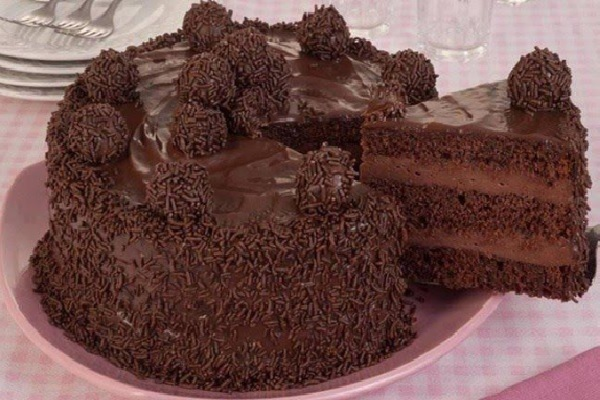
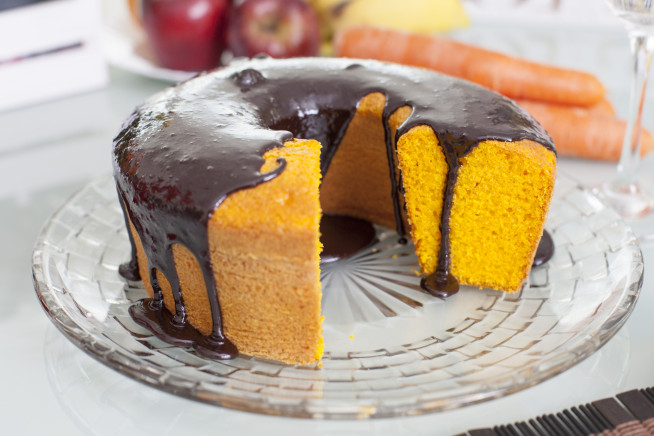
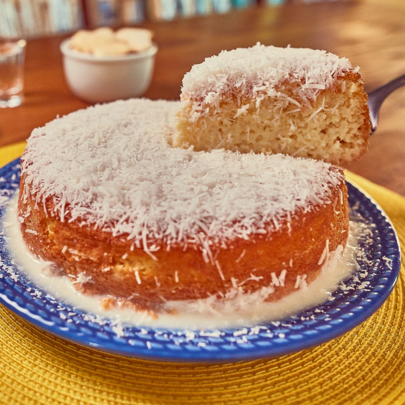

|  | Bolo de Chocolate |
Bolo de chocolate é um bolo simples ou confeitado, que leva chocolate derretido ou em pó, ou ainda cacau em pó em sua confecção. Os ingredientes mais comuns são o ovo, o leite, a manteiga ou substituto, açúcar e fermento. |
|  | Bolo de Cenoura |
DescriçãoO bolo de cenoura é um bolo doce com raspagem de cenoura misturada dentro da massa. A cenoura é amolecida no processo de cozimento, e o bolo, usualmente, tem um amolecimento e uma textura densa e suave. O bolo de cenoura à moda brasileira é feito com uma massa contendo cenoura, normalmente com cobertura de chocolate. |
|  | Bolo de Côco |
Bolo de coco é uma sobremesa popular na região sul dos Estados Unidos. É um bolo coberto com glacê branco e coberto de flocos de coco. |